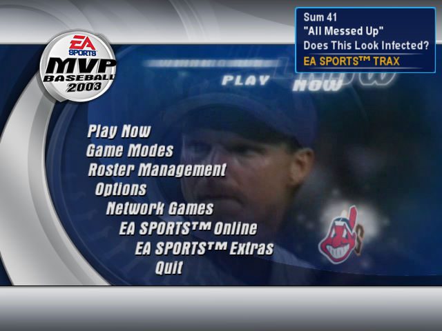
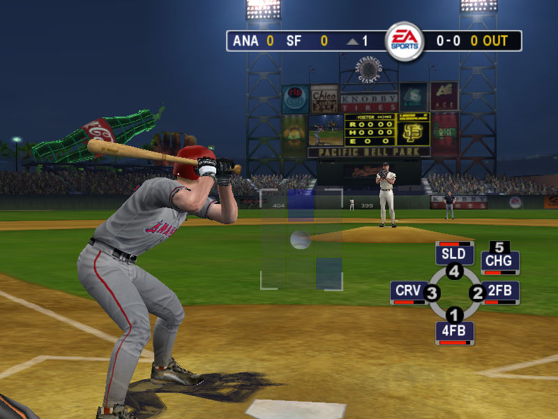

名稱：美國職棒大聯盟2003 (MVP Baseball 2003，英文版) 簡介：EA 2003年出品的棒球遊戲 [待補]。   保護：光碟SafeDisc 2.80+序號（JVNF-CBP7-DANJ-EPC4） 檔案：MVP-Baseball-2003_Patch_Win_EN_Patch-12.rar = 1.2更新檔 nocd10.rar = 1.0免光碟檔 nocd12.rar = 1.2免光碟檔

